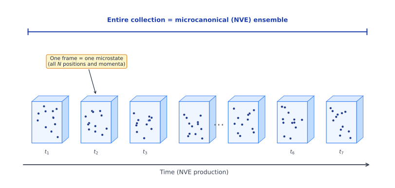
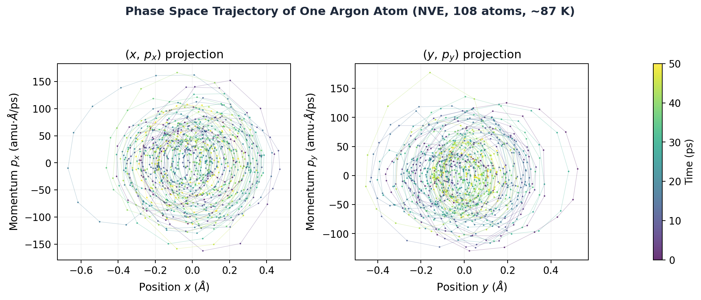
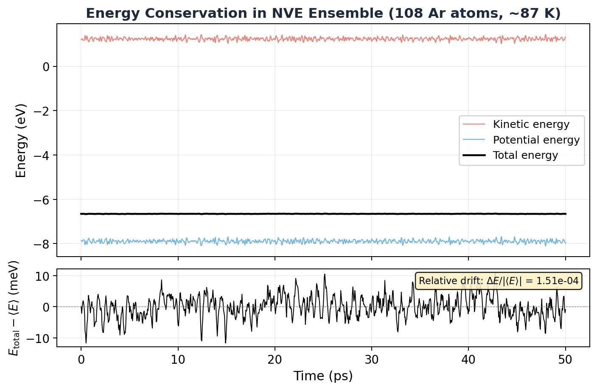

6.1 The Postulate of Classical Statistical Mechanics¶
Huang, Statistical Mechanics 2ed, Section 6.1
The one assumption that runs everything.¶
We've built the stage. Phase space. Ensembles. Liouville's theorem. A cloud of representative points that flows like an incompressible fluid and, for equilibrium, doesn't change with time.
Now comes the founding assumption. The single postulate that all of statistical mechanics rests on. Ready?
The Postulate of Equal a Priori Probability
When a macroscopic system is in thermodynamic equilibrium, its state is equally likely to be any state satisfying the macroscopic conditions of the system.
That's it. Every microstate consistent with the macroscopic constraints (\(N\), \(V\), energy between \(E\) and \(E + \Delta\)) is equally probable. No microstate is special. No region of the allowed phase space is preferred. Total democracy.
This gives us the microcanonical ensemble, the simplest ensemble:
Uniform density on the energy shell. Zero everywhere else. The microcanonical ensemble is the stubborn one: fixed \(N\), fixed \(V\), fixed \(E\), and every allowed state gets exactly the same weight. No favoritism. No preferences. Just a thin shell of constant probability painted across a \(6N\)-dimensional surface.
And Liouville's theorem guarantees this is self-consistent. A uniform distribution stays uniform under Hamiltonian flow. The fog doesn't clump. It can't. We checked.
Common Mistake
The postulate is an assumption, not a derivation. You can't prove it from Newton's laws or Hamilton's equations. It's a hypothesis that we accept because everything we derive from it matches experiment. Huang is very explicit about this, and honest enough to point out that the real justification ultimately comes from quantum mechanics, not classical mechanics. We're doing classical stat mech first for pedagogical reasons.
Averaging: how we extract predictions¶
Once we have the ensemble, we can compute observable quantities. If \(f(p, q)\) is some property of the system (energy, pressure, momentum, whatever), the ensemble average is:
For the microcanonical ensemble, this is just the average of \(f\) over all states on the energy shell, weighted equally.
There's also the most probable value, the value of \(f\) that the largest number of systems in the ensemble actually have. Are these the same?
Almost. They're nearly identical when fluctuations are small:
And here's the punchline: for macroscopic systems, fluctuations scale as \(\sim 1/N\). When \(N \sim 10^{23}\), the relative fluctuation is roughly \(10^{-23}\). The ensemble average and the most probable value are, for all practical purposes, the same number.
That's why statistical mechanics works. With \(10^{23}\) particles, the spread around the average is so absurdly tiny that the average is the answer. Done. Beautiful.
MD Connection
In your simulation, you compute time averages, averaging \(f\) along a trajectory. Statistical mechanics claims this should equal the ensemble average. This deep connection is called ergodicity, and we'll see exactly how it works in the simulation below.
Simulation: seeing the postulate with real atoms¶
Let me show you something that might change how you think about your simulations.
We ran a small LAMMPS simulation: 108 argon atoms interacting via the Lennard-Jones potential in an NVE ensemble (constant energy, no thermostat). This is exactly the kind of isolated system section 6.1 describes. Nothing fancy, just atoms bouncing around in a box with no thermostat touching them.
Now here's the key insight. Every single frame you save during the production run is a complete snapshot of all \(N\) positions and all \(N\) momenta. That's one point in \(\Gamma\) space. One microstate. The entire state of the system, frozen at one instant.
So what happens when you stack all those frames together?

You get the microcanonical ensemble. Seriously. That collection of frames IS the ensemble. Each card in the deck is one microstate. The whole deck is the ensemble. You didn't need to imagine millions of "mental copies" of your system. You already created them. Every frame is a copy, frozen at a different point on the energy surface.
This is the bridge between Gibbs's abstract "collection of mental copies" and what you actually do when you run lmp -in argon-nve.lammps. The ensemble isn't some theoretical fantasy. It's your trajectory file.
Key Insight
When you compute a time average from your trajectory (say, average temperature over 1000 frames), you're really computing an ensemble average over 1000 microstates. The assumption that these two are the same thing is called ergodicity: given enough time, a single trajectory visits representative microstates from the entire ensemble. That's why one simulation can tell you about thermodynamic properties.
Now let's look at what the trajectory actually reveals about phase space. Here's the path of a single argon atom, projected into the \((q, p)\) plane:

See those elliptical-looking orbits? The atom is rattling around in the potential well created by its neighbors, converting kinetic energy to potential and back again. In the full \(6N\)-dimensional phase space, all 108 atoms are doing this simultaneously, and the system's representative point traces a path that stays on the constant-energy surface \(\mathcal{H}(p, q) = E\).
And here's the proof that the energy surface is real:

Kinetic and potential energy are sloshing back and forth constantly. But the total energy? Flat line. The relative drift over 50 ps is about \(10^{-4}\). The system is confined to a thin energy shell in phase space, exactly as the theory demands.
Simulation
The LAMMPS input script and Python analysis code are available in ch06/simulations/. You can run them yourself to reproduce these plots.
Takeaway¶
Statistical mechanics starts with one postulate: in equilibrium, all microstates consistent with the macroscopic constraints are equally likely. That's the microcanonical ensemble. Everything else (temperature, entropy, free energy, equations of state) gets built on top of this single idea. The postulate can't be proven. It just works. And that's enough.
Check Your Understanding
- You can't prove the equal a priori probability postulate from Newton's laws. So why do we believe it? And why does Huang keep saying the "real" justification is quantum mechanical?
- Your 108-atom argon box has energy fluctuations of ~2%. A mole of argon would have fluctuations of ~\(10^{-12}\)%. Does that mean the postulate works "less well" for your small simulation?
- You and your labmate both simulate 108 argon atoms at the same density and energy, but you picked different random starting velocities. You both measure time-averaged temperature. Should you get the same \(T\)? What's the one assumption that guarantees it?